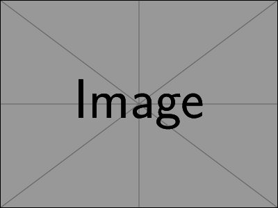

Title of the Article
(Date: July 27, 2026)
Abstract.
A concise description of the article.
1. Introduction
Use semantic LaTeX structures rather than visual formatting commands.
Definition 1.1.
A sample definition.
Theorem 1.2.
A sample theorem.
Proof.
The proof goes here. ∎
2. Figures
